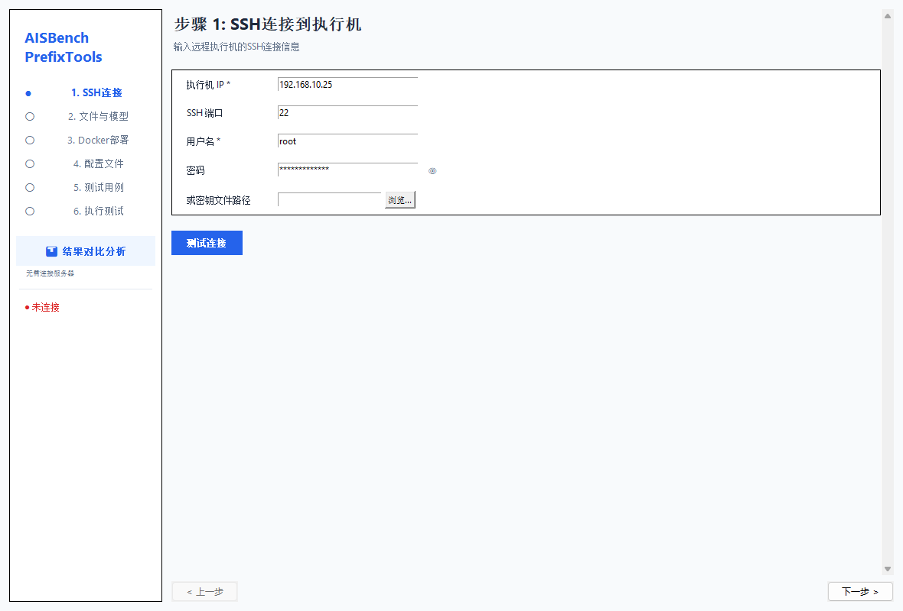
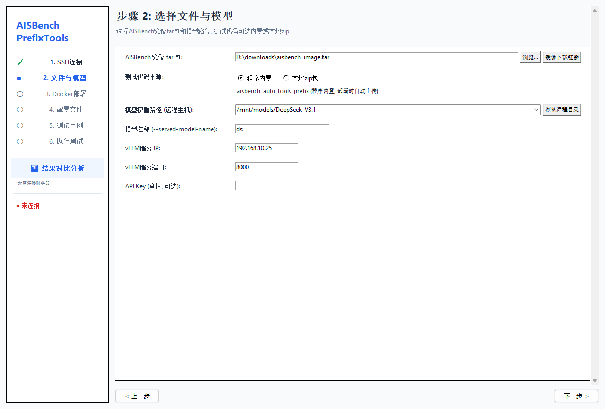
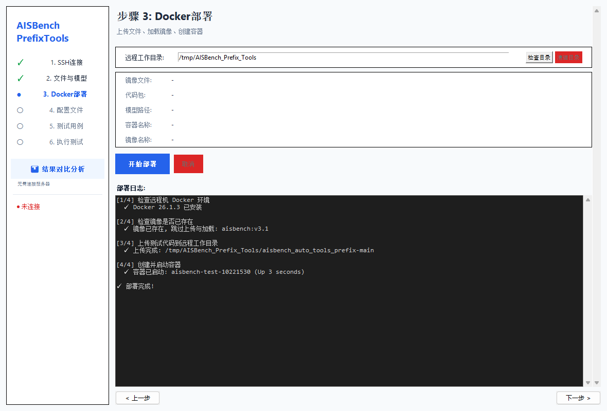
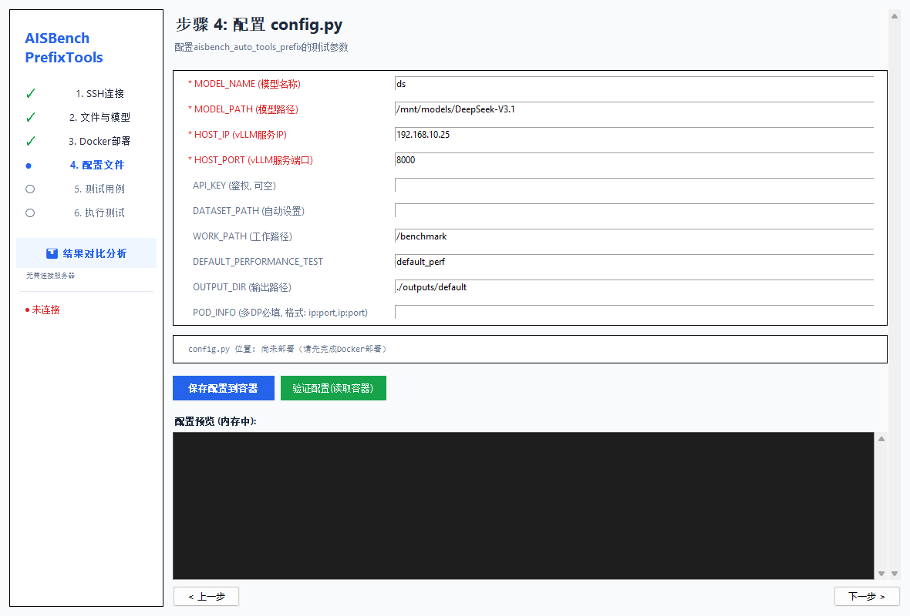
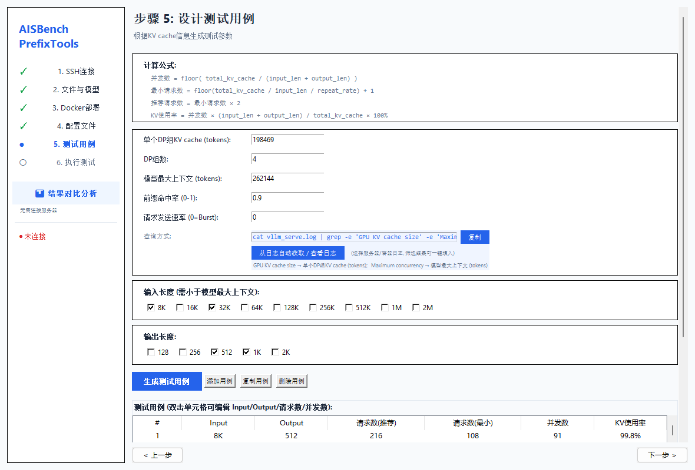
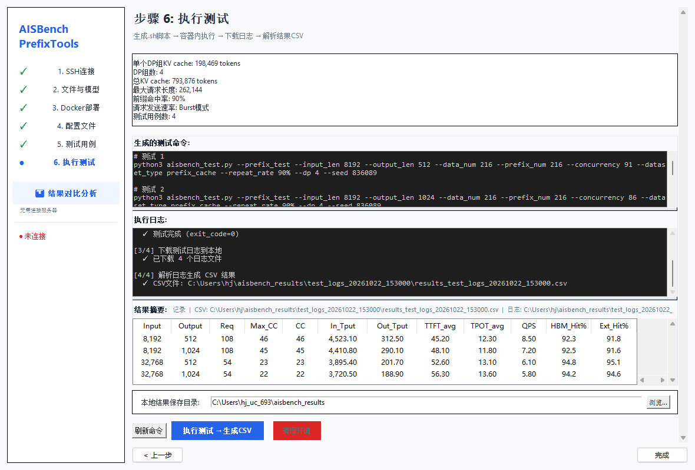
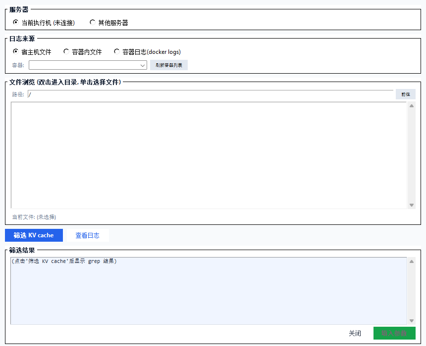
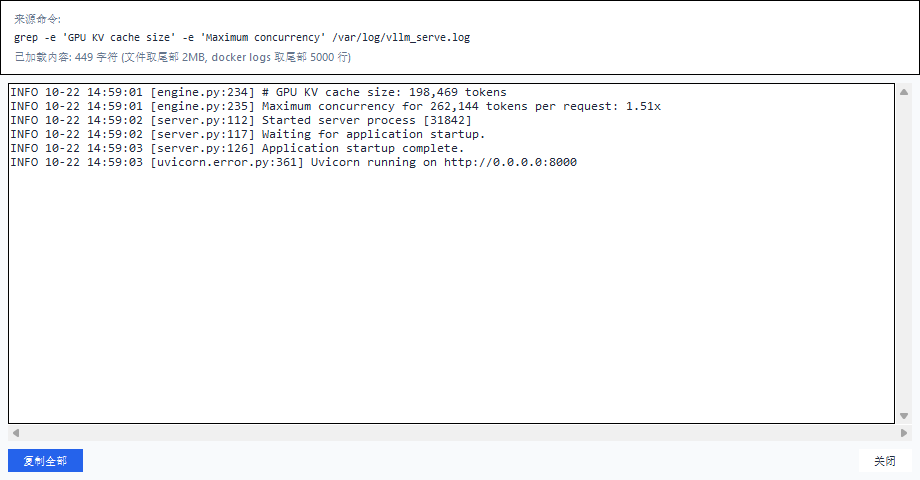
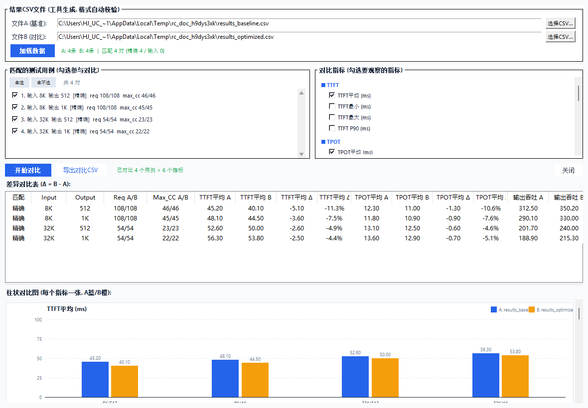

AISBench-Prefix-Tools
Windows 桌面工具 —— 远程部署 AISBench 测试环境，自动设计 / 执行 prefix cache 性能测试，自动提取结果生成 CSV，并内置结果对比分析。
工具简介
AISBench-Prefix-Tools 是面向 Windows 用户的 prefix cache 性能测试工具。它通过 SSH 管理远程 Linux 执行机，自动完成镜像加载、容器创建、配置生成、测试脚本设计、测试执行、日志下载与 CSV 提取，并提供独立的结果对比分析能力。
六步向导
从 SSH 连接到生成结果 CSV，一条流程完成远程环境部署与测试执行。
用例自动设计
根据 KV cache 容量、DP 组数、输入输出长度自动计算请求数与并发数。
远程日志工具
选择服务器、容器和日志文件，一键筛选 KV cache 关键信息并回填测试参数。
结果对比分析
选择两个结果 CSV，按输入规模匹配用例，输出差异表格与分组柱状图。
整体流程
快速开始
方式一：直接下载 EXE
下载最新稳定版或 Nightly 构建后，双击即可运行，无需安装 Python 和任何依赖。
稳定版：https://github.com/ucm-system/AISBench-Prefix-Tools/releases/latest/download/AISBench-Prefix-Tools.exe
Nightly：https://github.com/ucm-system/AISBench-Prefix-Tools/releases/download/nightly/AISBench-Prefix-Tools.exe方式二：从源码运行
git clone https://github.com/ucm-system/AISBench-Prefix-Tools.git
cd AISBench-Prefix-Tools
pip install -r requirements.txt
python main.py方式三：本地打包 EXE
pip install -r requirements.txt
build_exe.bat步骤 1：SSH 连接执行机
STEP 1 / 6输入执行机连接信息，点击“测试连接”。连接成功后即可进入下一步。

| 字段 | 说明 | 示例 |
|---|---|---|
| 执行机 IP | 远程 Linux 服务器地址 | 141.xx.xx.xx |
| SSH 端口 | 默认 22，按实际安全组配置填写 | 22 |
| 用户名 | 远程服务器登录用户 | root |
| 密码 / 密钥 | 二选一；密钥支持 RSA 或 Ed25519 | server.pem |
步骤 2：选择文件与模型
STEP 2 / 6选择本地镜像 tar 包，指定测试代码来源，并填写模型与 vLLM 服务信息。

| 字段 | 说明 |
|---|---|
| 镜像 tar 包 | 本地 AISBench Docker 镜像文件；可点击“镜像下载链接”直达 Releases。 |
| 测试代码来源 | 默认使用程序内置代码，也可选择本地 zip 包。 |
| 模型路径 | 远程执行机上的模型权重目录，可点击“浏览远程目录”定位。 |
| 模型名称 | 对应 vLLM 的 --served-model-name 参数。 |
| vLLM 服务 IP / 端口 | 推理服务访问地址，端口通常为 8000。 |
| API Key | 服务鉴权令牌；未开启鉴权时留空。 |
步骤 3：Docker 部署
STEP 3 / 6确认远程工作目录后点击“开始部署”。工具会自动检查 Docker 环境、加载镜像、上传代码并启动容器。

自动执行流程
- 默认远程工作目录：
/tmp/AISBench_Prefix_Tools。 - 容器自动命名：
aisbench-test-MMDDHHMM。 - 模型路径按原路径挂载，代码目录挂载到容器内 benchmark 路径。
- 部署前可检查或清理目录；目录非空时工具会提醒，避免误覆盖。
步骤 4：配置 config.py
STEP 4 / 6确认自动生成的配置字段，点击“保存配置到容器”。保存后可点击“验证配置”回读容器内文件并与界面值比对。

| 字段 | 默认值 / 示例 | 说明 |
|---|---|---|
| MODEL_NAME | ds | 步骤 2 中填写的模型名称。 |
| MODEL_PATH | 模型目录 | 模型权重在远程机上的路径。 |
| HOST_IP / HOST_PORT | 8000 | vLLM 服务地址。 |
| DEFAULT_PERFORMANCE_TEST | default_perf | 稳态测试填写 stable_stage。 |
| OUTPUT_DIR | ./outputs/default | 容器内日志输出目录。 |
| POD_INFO | [] | 多 DP 场景必填，格式如 ip:port,ip:port。 |
步骤 5：设计测试用例
STEP 5 / 6填写 KV cache 信息并选择输入、输出长度，点击“生成测试用例”。工具会自动计算推荐请求数、最小请求数、并发数和 KV 使用率。

| 字段 | 说明 | 示例 |
|---|---|---|
| 单个 DP 组 KV cache | 从 vLLM 日志解析或手动填写 | 198469 |
| DP 组数 | data-parallel-size | 4 |
| 最大请求长度 | 单条请求最大 token 数 | 32768 |
| 前缀命中率 | repeat_rate，范围 0~1 | 0.9 |
| 请求发送速率 | 0 表示 Burst；大于 0 表示固定速率 | 0 |
自动计算规则
最小请求数 = floor(total_kv_cache / input_len / repeat_rate) + 1
推荐请求数 = 最小请求数 × 2
并发数 = floor(total_kv_cache / (input_len + output_len))- 生成前会自动跳过超出模型最大上下文长度的选项。
- 表格支持双击编辑 Input、Output、请求数和并发数。
- 支持添加、复制和删除用例。
- 请求数低于最小值时仅提醒，不会强制拦截。
步骤 6：执行测试并生成 CSV
STEP 6 / 6确认本地结果保存目录后，点击“执行测试 → 生成CSV”。工具会自动预检查模型路径、生成脚本、上传执行、下载日志并解析结果。

输出位置
默认目录：C:/Users/<用户名>/aisbench_results
日志目录：test_logs_<时间戳>/test_<序号>_<input>_<output>.log
结果文件：results_test_logs_<时间戳>.csv结果摘要字段
摘要表格包含 Input、Output、请求数、最大并发、并发、输入吞吐、输出吞吐、TTFT、TPOT、QPS、HBM 命中率和外部缓存命中率，并标注 CSV 与日志路径。
远程日志工具
在步骤 5 点击“从日志自动获取”或“查看日志”，即可打开远程日志工具。它支持选择服务器、日志来源和具体日志文件，并直接给出筛选结果。

支持的日志来源
| 来源 | 说明 |
|---|---|
| 宿主机文件 | 通过远程目录树选择服务器上的日志文件。 |
| 容器内文件 | 自动列出运行中容器，进入容器后选择日志文件。 |
| 容器 stdout | 直接读取 docker logs 输出。 |
筛选 KV cache
- 选择服务器。默认使用当前执行机，也可以临时连接其他服务器。
- 选择宿主机文件、容器内文件或容器 stdout。
- 选择目标日志并点击筛选。
- 解析“单个 DP 组 KV cache”和“模型最大上下文”后，点击“一键填入”。
查看指定日志文件
选择日志后点击“查看日志”，会在独立窗口展示内容。宿主机与容器内文件取尾部 2MB，容器 stdout 取尾部 5000 行，支持横向滚动和一键复制。

结果对比分析
结果对比分析是独立入口，不需要连接执行服务器。可以从左侧边栏打开，也可以在步骤 6 的结果摘要右侧打开。

使用步骤
- 分别选择 CSV A 和 CSV B，两者必须为本工具生成的结果 CSV。
- 工具校验表头格式，缺少或多余字段会明确提示。
- 在匹配列表中勾选要对比的用例。
- 按分组选择需要观察的指标。
- 点击“开始对比”，查看差异表格和柱状图。
- 需要留存时，点击“导出对比 CSV”。
匹配规则
- 优先按输入长度和输出长度精确匹配。
- 剩余用例回退为仅按输入长度匹配，并在界面标注匹配方式。
- 匹配列表同时展示两侧请求数和 Max_CC，便于确认测试条件。
结果内容
| 区域 | 说明 |
|---|---|
| 差异表格 | 展示 Req A/B、Max_CC A/B，以及每个指标的 A 值、B 值、Δ 和 Δ%。 |
| 柱状图 | 每个指标自动绘制分组柱状图；横坐标展示输入、输出、请求数和 Max_CC。 |
| 导出 CSV | 将当前差异表格保存为新的 CSV 文件。 |
环境清理与退出
测试完成后会自动询问是否清理远程环境。也可以随时点击“清理环境”手动执行。
| 操作 | 结果 |
|---|---|
| 清理远程环境 | 停止并删除容器，清理远程工作目录；本地结果不受影响。 |
| 保留环境 | 容器和远程目录保留，便于继续排查或复用。 |
| 退出程序 | 点击“完成”或窗口关闭按钮；若容器仍在运行，会再次提醒。 |
常见问题
镜像加载后无法自动识别镜像名？
工具优先读取 tar 包内 manifest.json 获取镜像名；读取失败时再解析 docker load 输出。可在步骤 3 部署日志中查看结果。
模型路径浏览看不到文件？
远程目录浏览器默认从根目录开始，双击 DIR 进入子目录。部分目录可能因权限问题无法列出。
POD_INFO 应该怎么填？
单 DP 场景留空即可。多 DP 场景填写每个节点地址并用逗号分隔，例如 141.1.1.11:8000,141.1.1.12:8000。
如何重新部署？
再次点击“开始部署”会删除同名旧容器并重新创建，也可以先手动删除容器后重试。
结果 CSV 可以单独解析吗？
可以。对比分析工具只要求 CSV 表头与本工具生成格式一致；日志解析脚本也可独立调用。
下载与资源
推荐版本
- 最新稳定版：适合正式测试。
- Nightly EXE：main 分支最新构建，适合试用新功能。
- AISBench 镜像 v3.1-20261013-master：当前推荐镜像下载地址。